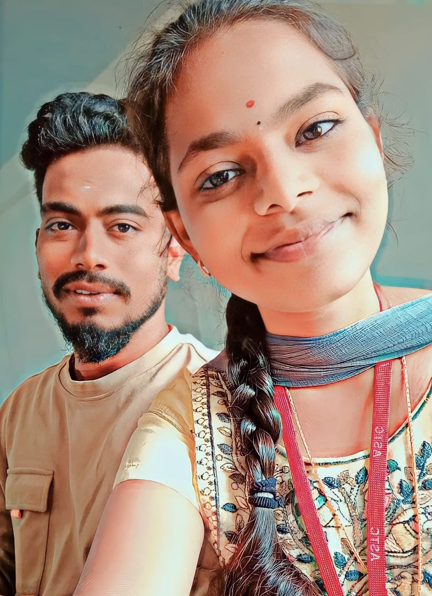
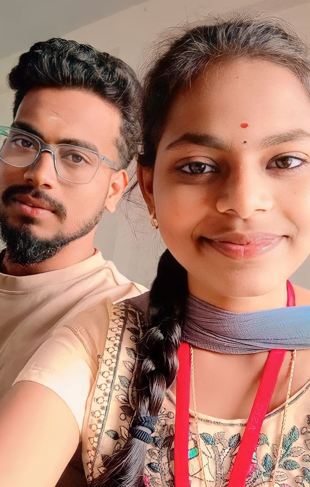
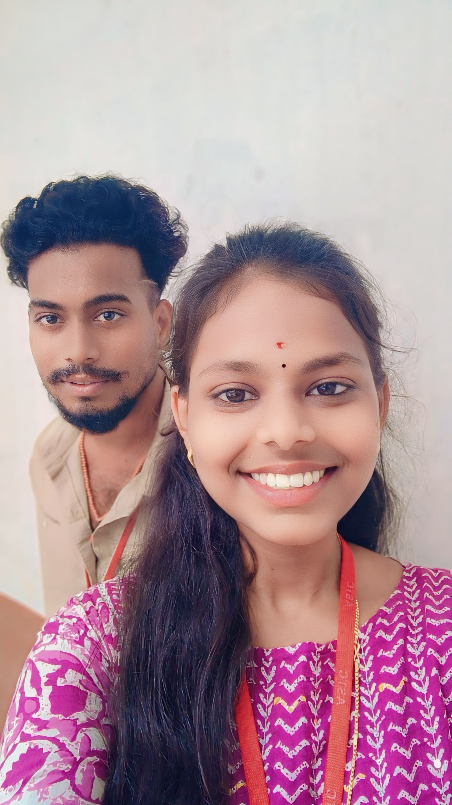

“సోదరి ప్రేమ”
is a powerful and unique bond
it’s a blend of friendship, loyalty, shared memories, and sometimes even a little chaos.
Whether it’s between biological sisters or soul sisters, this kind of love is a unconditional
SISTER LOVE "సోదరీ సంబంధం అనేది అత్యంత దీర్ఘకాలికమైనది
మరియు అర్థవంతమైన అనుబంధాలలో ఒకటి.
ఇది పంచుకున్న అనుభవాలు, బాల్యస్మృతులు,
మరియు మాటలు అవసరం లేని లోతైన బంధంతో నిర్మించబడింది.
ఒక సోదరి ఉత్తమ స్నేహితురాలు, విశ్వసనీయురాలు, మరియు ఒక కఠిన రక్షకురాలిగా కూడా ఉండవచ్చు."

ఒక సోదరి is often your first protector,
defending you from bullies at school or standing up to your parents on your behalf.
She may tease you mercilessly but will never let someone else hurt you without consequence. As you grow older, the bond evolves.
SISTER LOVE సోదరి ప్రేమ అనేది హృదయాన్ని తాకే అమూల్యమైన బంధం.
చిన్ననాటి నుండి పంచుకున్న జ్ఞాపకాలు ఈ ప్రేమను మరింత బలపరుస్తాయి.
సోదరి ఒక స్నేహితురాలిగా, మార్గదర్శకురాలిగా, రక్షకురాలిగా మారుతుంది.
ఆమె ప్రేమ నిస్వార్థమైనది, అర్థం చెప్పకుండానే అనిపించే సానుభూతి.
ఇలాంటి సోదరి ఉండటం నిజమైన వరంగా భావించాలి.


“సోదరి ప్రేమ”
A sister’s love is unconditional and unchanging.
There is no selfishness in her love — it is purely from the heart.
No matter the situation, the bond between sisters always stands strong.
Her words bring comfort, and her presence becomes a symbol of support.
.
SISTER LOVEవాళ్లు చిన్ననాటి జ్ఞాపకాల్ని మరిచిపోయినట్టు నటిస్తారు,
కానీ ప్రతి అర్ధరాత్రి నిన్ను నేను చెప్పుకున్న మాటలు, పంచుకున్న
రహస్యాలు ఇద్దరికీ కూడా గుర్తుంటాయి. ఈ కోలాహల భరితమైన ప్రపంచంలో,
వాళ్లు ఒకరికి ఒకరు మౌనమైన అండగా ఉంటారు — ఇది కేవలం రక్త సంబంధం కాదే,
అసలే లేదు అనుకుంటూ కూడా జీవనాంతం పాటు ఒకరికి ఒకరంటే ఎంత అవసరమో తెలిసిన బంధం